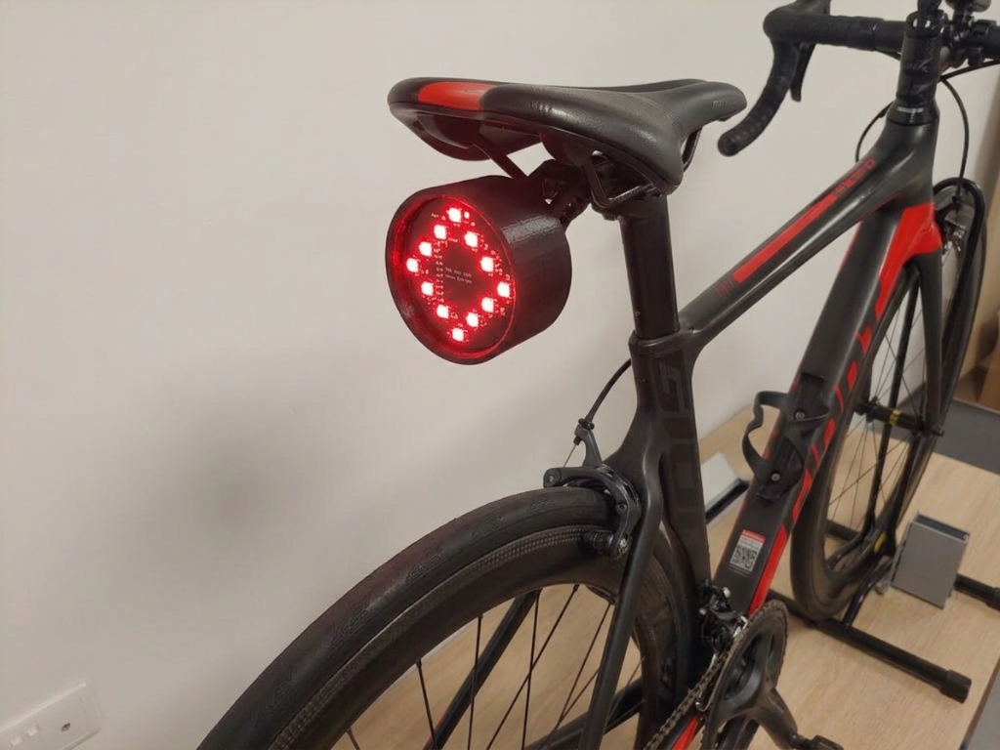
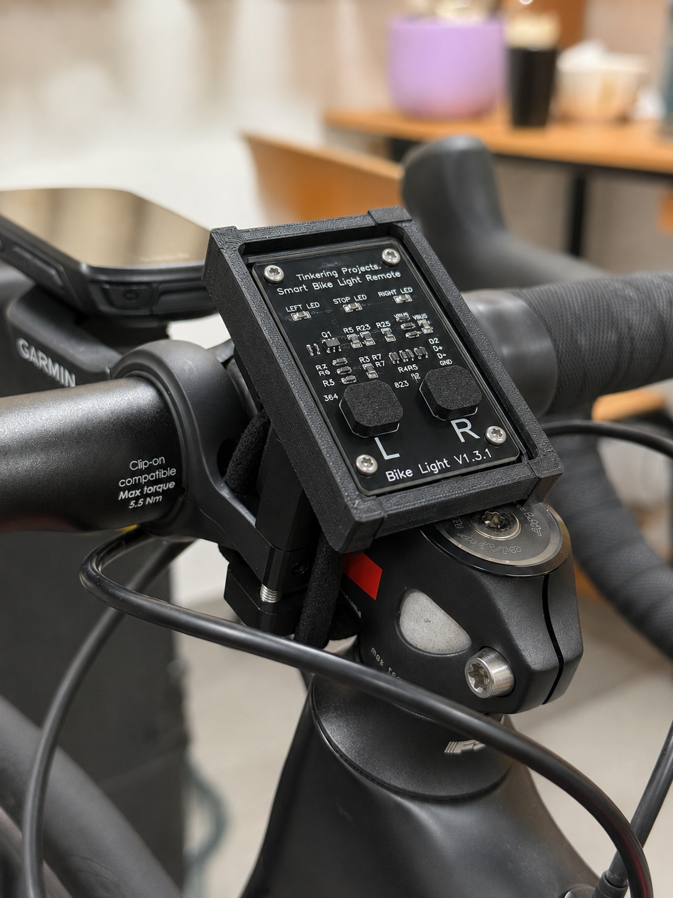

SYS.VER 3.1.0
•
GARAGE@EEE OS

SignalRide
BOOTING CORE...
[ OK ] MEMORY_CHECK_PASSED
SignalRide is a rear-mounted smart bicycle lighting system that improves cyclist visibility and helps riders communicate turning intentions more clearly through directional LEDs, wireless handlebar control, IMU-based motion sensing, and automatic signal deactivation.
Ergonomic low-latency controls allow seamless, hands-on signal triggering directly from the handlebars for uninterrupted rider focus.
Outputs bright, high-intensity left and right LED signaling to clearly communicate turning intentions to trailing motorists.
Integrated 6-axis IMU motion sensing tracks tilt and rotation to automatically cancel turn signals once a maneuver is complete.
Provides uninterrupted running light coverage to maximize cyclist presence and ensure high optical visibility day or night.
Cyclists must communicate movement to surrounding road users, especially when turning. Conventional rear lights confirm presence, but fail to convey future intent.
Standard hand signals require removing one hand from the handlebar and rely heavily on visual clarity—creating severe safety risks in low-light, complex traffic.
Less than 25% of cyclists in Singapore use hand signals to indicate turns, highlighting a critical gap in road safety communication.
The SignalRide system bridges the communication gap by providing a dual-unit architecture: a rear light unit for visibility and directional signaling, and a handlebar-mounted wireless remote for intuitive control. The system leverages IMU motion sensing to automatically deactivate turn signals after the maneuver is completed, ensuring safety and convenience for cyclists.
The cyclist toggles directional indicators using dedicated handlebar controls. The rear unit projects corresponding LED patterns and uses onboard IMU sensing for automatic signal deactivation once the turn is executed.


Dedicated ESP32-C3 chips manage instantaneous wireless communications and lighting matrices.
980 mAh LiPo Battery integrated with type-C rechargeable charging circuit and precision regulation.
Tracks angular rotational velocity to clear turn signals automatically post-turn.
Progressing from perfboard prototypes to custom double-sided circular PCBs, surface-mount LED arrays, and 3D-printed enclosure revisions for both the main light unit and wireless remote.

Successfully conducted field trials validating real-world performance—including low-latency signal triggering, automated turn cancellation, and high-contrast night visibility. Initial testing confirms high market potential for enhancing cyclist safety and road-user communication.
Built, tested, and advanced by a 7-member team at Garage@EEE, under Nanyang Technological University, Singapore.
SingalRide
Email:signalride.procurement@gmail.com
Nanyang Technological University, Singapore
Garage@EEE Innovator Track